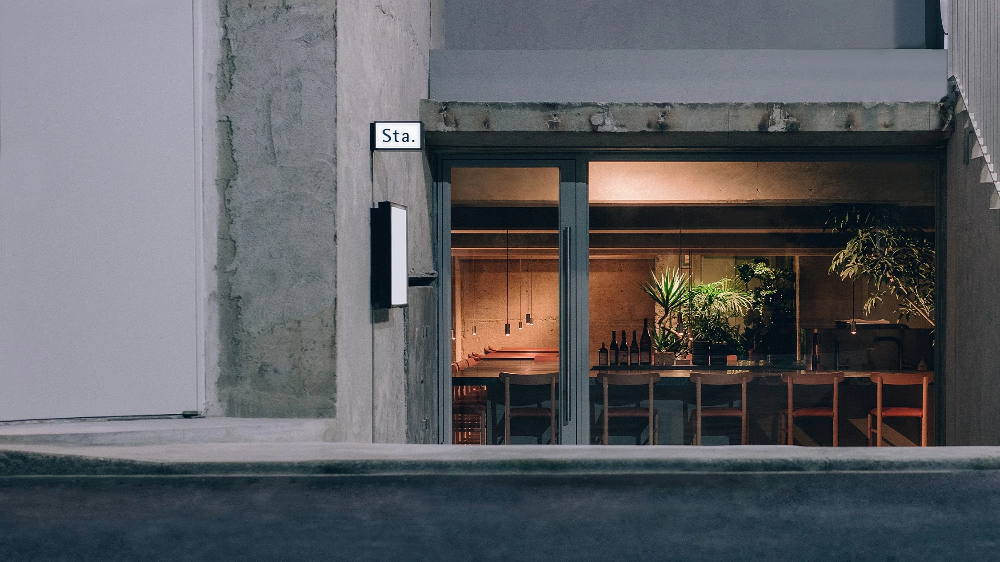

Sta.
Nihonbashi
大伝馬町の半地下にあった駐車場を、作り変えました。
A semi-basement parking lot, converted into a Sta.
江戸最古の町の一つである、日本橋大伝馬町。今ではオフィスビルが並ぶまち並みの中で、駐車場として利用されていた空間を、Sta.へと作り変えました。天井が低いかと思えば、いきなり吹き抜けがある。そんな駐車場ならではの特徴を生かしながら、厨房を囲むカウンター席と、吹き抜けの中のテーブル席をご用意しました。スロープを下った半地下で、お待ちしております。
Nihonbashi-odenmacho is one of the oldest neighborhoods in Tokyo. It is now a business district full of office buildings and parking lots; one parking lot has been transformed into a Sta. A short slope leads into this semi-basement space, which features a low-ceilinged entry area that suddenly opens up into a cavernous parking area. This inspired us to place counter seating surrounding a kitchen in the intimate entry area and table seating in the more spacious area.
Highlights
Sta.日本橋を形作るものの、一部をご紹介します。
Menu
Information
Phone
03 6661 9980
メールフォームでのお問合せはこちら
Click here to contact us by e-mail form.
Address
東京都中央区日本橋大伝馬町12-9
馬喰横山駅から徒歩2分／小伝馬町駅から徒歩4分
12-9 Nihonbashiodenma-cho, Chuo-ku, Tokyo
2 minutes walk from Bakuro-Yokoyama Station / 4 minutes walk from Kodenmacho Station
Google Maps
Opening Hours
Dinner 17:00-23:00 (22:30 LO)
毎月最終水曜定休日
Closed on the last Wednesday of every month
Amenities
Free Wi-Fi
ランチタイムの営業開始時期は、追ってお知らせさせていただきます。
Recruit
Sta.で共に働いていただける方を募集しています。
We are looking for staff who are enthusiastic, thoughtful, and want to build something together.